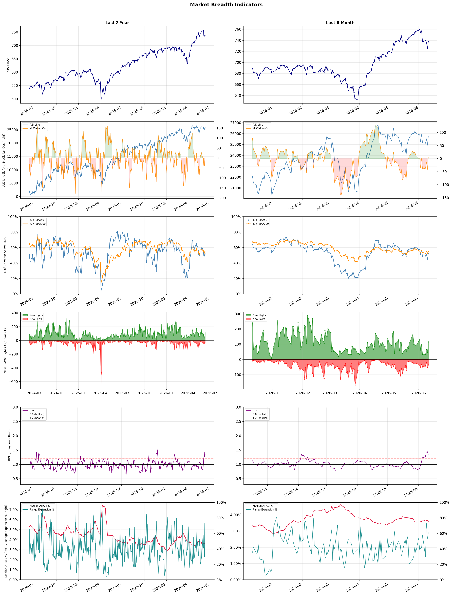

A daily research map of market breadth, industry rotation, and technical setups
| Item | Read |
|---|---|
| Regime | Selective Risk-On |
| Risk posture | Selective |
| Indices | QQQ 717.12 (+3.4% today) |
| Universe | 1,699 stocks tracked · 116 new 52-week highs · 30 active swing setups |
| Breadth | 52.5% of tracked stocks are above SMA50 — neutral range, new highs exceed new lows (116 vs 36) |
| Leadership | Trucking, REIT - Hotel & Motel, and Computer Hardware |
| Weakest groups | Other Precious Metals & Mining, Gold, and Uranium |
Use this report to prioritize research and chart review; validate entries, stops, liquidity, earnings, and risk before acting.
| Item | Read |
|---|---|
| Primary read | Selective Risk-On regime with Selective risk posture. |
| Research queue | RXO, WERN, KNX, ODFL, XPO |
| Leadership focus | Trucking, REIT - Hotel & Motel, and Computer Hardware |
| Caution list | Other Precious Metals & Mining, Gold, and Uranium |
| Review prompt | Check extension risk, chart location, fundamentals, valuation, and earnings before using any research row. |
| Item | Read |
|---|---|
| Primary read | 0 active risk warnings; use screen output as watchlist input only. |
| Bullish screens | PEB, RLJ, TJX, CLOV, HUM |
| Bearish screens | none |
| Alerts / levels | Automated trigger, stop, ATR, liquidity, reward/risk, and event-risk levels are pending future enrichment. |
| Review prompt | Open the linked chart, define trigger and invalidation, then check liquidity and event risk independently. |
Risk Posture: Selective — screen backdrop supports selective research in leading industries
Metric context: McClellan below -50 = elevated selling pressure; below -100 = washout territory. Range Expansion = share of stocks with daily range above their 20-day average. Signal Density = share of tracked names appearing in signal screens.
| Breadth Date | % > SMA50 | % > SMA200 | New Highs | New Lows | McClellan | Median Range | Avg Range | Median ATR14 | Range Expansion | Signal Density |
|---|---|---|---|---|---|---|---|---|---|---|
| 2026-06-11 | 52.5% | 55.4% | 116 | 36 | 5.2 | 3.7% | 4.2% | 3.6% | 60.9% | 1.4% |

Prior comparison date: June 10, 2026
| Metric | Prior | Current | Change |
|---|---|---|---|
| Regime | Neutral | Selective Risk-On | changed |
| Risk Posture | Cautious | Selective | changed |
| % > SMA50 | 45.1% | 52.5% | +7.4 pts |
| % > SMA200 | 52.6% | 55.4% | +2.8 pts |
| New Highs | 46 | 116 | +70 |
| New Lows | 54 | 36 | +18 |
Top-10 industries entering: Semiconductor Equipment & Materials. Top-10 industries leaving: Diagnostics & Research. New multi-signal long setups: BFLY, BRX, CRDO, FULT, ICHR, KIM, KRG, LNTH, LQDA, MNST. New multi-signal short setups: none.
| Status | Tickers | Read |
|---|---|---|
| Added | BFLY, BRX, CRDO, FULT, ICHR, KIM, KRG, LNTH | New technical screen matches vs prior report. |
| Removed | AKAM, BAC, BCE, BROS, CCEP, CDP, EXR, GBDC | No longer present in today's technical screen matches. |
| Still Active | AMRX, CAKE, CLOV, CNK, FBP, FOX, HUM, LAUR | Appeared in both current and prior reports. |
| Promoted | LAUR | Model Screen Score improved by at least 15 points. |
| Downgraded | none | Model Screen Score declined by at least 15 points. |
| Direction | Industry | ETF | Prior Rank | Current Rank | Days | Rank Change |
|---|---|---|---|---|---|---|
| Rose | Airlines | N/A | 96 | 14 | 42 | +82 |
| Rose | Diagnostics & Research | N/A | 94 | 13 | 42 | +81 |
| Rose | Apparel Retail | XRT | 95 | 17 | 28 | +78 |
| Rose | Footwear & Accessories | N/A | 86 | 12 | 28 | +74 |
| Rose | Residential Construction | ITB | 87 | 15 | 28 | +72 |
Bull: The airline industry's rising relative strength can be attributed to a rebound in travel demand as consumer confidence continues to improve, despite recent profit warnings from some airlines like Delta. This optimism is reflected in positive sentiment from analysts, as highlighted in headlines from Zacks and The Motley Fool, which emphasize the potential for growth and recommend airline stocks as solid investment opportunities moving into 2026. Additionally, the overall resilience of the sector, even amidst short-term pressures, suggests a strong recovery trajectory supported by pent-up travel demand and increasing capacity.
Bear: While the rising relative strength of airline stocks might suggest a rebound in travel demand, the recent sector-wide profit warnings, particularly from major players like Delta, indicate underlying financial instability that cannot be overlooked. Additionally, the optimism from analysts may be overly optimistic given the potential for economic headwinds such as rising fuel costs, inflation, and geopolitical uncertainties that could dampen consumer spending and travel habits, ultimately threatening the industry's recovery trajectory.
Verdict: The airline industry's rising relative strength is primarily driven by a rebound in travel demand and improving consumer confidence, with analysts highlighting the potential for growth despite recent profit warnings from major airlines like Delta. However, key risks remain, including rising fuel costs, inflation, and geopolitical uncertainties that could negatively impact consumer spending and travel habits, suggesting investors should approach airline stocks with caution and consider these economic headwinds when evaluating potential investments.
Sources: Google News
Bull: The Apparel Retail sector is experiencing a rising relative strength primarily due to positive sentiment driven by strong earnings reports and sector-wide rallies, as highlighted by the notable performance of companies like Abercrombie & Fitch and Shoe Carnival. Additionally, the recent inflation data suggests a stabilizing economic environment, which can boost consumer spending in discretionary sectors like apparel, further supporting the bullish outlook for the industry.
Bear: While the recent earnings reports and sector rallies may suggest a positive trend, they could be driven more by short-term sentiment rather than sustainable growth, especially in an environment marked by geopolitical tensions and inflationary pressures. The apparel retail sector is highly susceptible to shifts in consumer spending habits, and any resurgence in inflation or economic instability could quickly dampen discretionary spending, undermining the bullish outlook. Furthermore, the reliance on a few outperforming companies like Abercrombie & Fitch and Shoe Carnival raises concerns about the overall health of the sector, as broader market dynamics may not support continued growth across the entire industry.
Verdict: The apparel retail sector's rising relative strength is fundamentally supported by strong earnings reports and a stabilizing economic environment that encourages consumer spending in discretionary categories. However, the key risk lies in the potential for renewed inflationary pressures and geopolitical tensions, which could swiftly alter consumer behavior and dampen demand, making it essential for investors to monitor macroeconomic indicators closely.
Sources: Yahoo Finance, Google News
Bull: The Footwear & Accessories sector is experiencing rising relative strength due to favorable industry trends, as highlighted by multiple reports indicating a robust growth phase for textile-apparel stocks, particularly in footwear. The recent sector-wide rally, exemplified by Crocs' 6.7% jump, suggests strong consumer demand and positive market sentiment, driven by a resurgence in consumer discretionary spending as the economy stabilizes. Additionally, analysts are optimistic about the potential for significant gains in the sector, as indicated by articles identifying top stocks poised for growth through 2026, reinforcing the bullish outlook for the industry.
Bear: While the Footwear & Accessories sector may currently exhibit rising relative strength and positive market sentiment, this could be misleading as it often reflects short-term trends rather than sustainable growth. The recent rally, including Crocs' jump, may not be indicative of long-term consumer demand, especially as inflationary pressures and economic uncertainties continue to affect discretionary spending. Additionally, the industry's reliance on trends and consumer preferences can lead to volatility and overvaluation, making it vulnerable to corrections as market conditions shift.
Verdict: The Footwear & Accessories sector's recent rise can be attributed to a rebound in consumer discretionary spending as the economy stabilizes, driving strong demand for footwear, as evidenced by notable stock performances like Crocs' 6.7% increase. However, investors should remain cautious of the potential for volatility and corrections due to inflationary pressures and shifting consumer preferences, which could undermine the sustainability of this growth. It's advisable to closely monitor economic indicators and consumer sentiment to gauge the longevity of this upward trend.
Sources: Google News
Bull: The rising relative strength of the Residential Construction sector, as reflected in the ITB ETF, is primarily driven by declining mortgage rates, which enhance affordability and stimulate demand for new homes. Recent headlines indicate a sector-wide rally, exemplified by Toll Brothers' 6.6% jump, and the positive sentiment following Berkshire Hathaway's investment in homebuilders, suggesting a growing confidence in the sector's recovery despite challenges like weekly mortgage rates hitting 6.51%. This combination of lower borrowing costs and institutional backing positions residential construction favorably for growth.
Bear: While the recent decline in mortgage rates may provide a temporary boost to affordability, the persistent high rates—now at 6.51%—still pose significant challenges for potential homebuyers, limiting overall demand and constraining market recovery. Additionally, the sector's reliance on institutional investments, such as Berkshire Hathaway's, may not reflect sustainable consumer confidence, as it can be more indicative of speculative positioning rather than a robust, underlying demand for new homes. With ongoing economic uncertainties and potential for further rate hikes, the residential construction sector may face headwinds that could undermine the current optimism.
Verdict: The residential construction sector is experiencing a rally primarily due to declining mortgage rates, which enhance affordability and stimulate demand for new homes, as evidenced by the ITB ETF's performance and positive market reactions to institutional investments like Berkshire Hathaway's. However, the key risk remains the persistent high mortgage rates, currently at 6.51%, which could limit overall buyer demand and hinder sustainable recovery in the sector. Investors should closely monitor economic indicators and potential rate hikes that could impact consumer confidence and market stability.
Sources: Yahoo Finance, Google News
| Direction | Industry | ETF | Prior Rank | Current Rank | Days | Rank Change |
|---|---|---|---|---|---|---|
| Fell | Uranium | URA | 19 | 96 | 35 | -77 |
| Fell | Other Industrial Metals & Mining | N/A | 7 | 82 | 35 | -75 |
| Fell | Oil & Gas Drilling | XES | 8 | 83 | 28 | -75 |
| Fell | Utilities - Regulated Gas | XLU | 19 | 89 | 42 | -70 |
| Fell | Chemicals | N/A | 20 | 90 | 42 | -70 |
Bear: While the bull analyst emphasizes the long-term fundamentals for uranium, the recent decline in the relative strength of uranium stocks, as seen in the URA ETF, suggests a more immediate and pressing concern: the increasing competition from alternative energy sources and the market's growing enthusiasm for AI-driven technologies. This shift in investor sentiment could hinder uranium's potential for growth, especially given the volatility and liquidity issues highlighted by the low asset base of emerging ETFs like NUKZ. Additionally, the broader market's focus on decarbonization and renewable energy solutions may overshadow uranium's role, leading to a more cautious outlook for the sector in the near term.
Bull: The recent decline in the relative strength of uranium stocks, as reflected in the ETF URA, can be attributed to a broader market focus on alternative energy sources and commodities driven by themes like AI electricity demand and the transition to smart grids. Headlines highlighting the competition among various ETFs and the emergence of new market themes, such as AI and alt energy, suggest that investor attention is shifting away from uranium, despite its critical role in meeting future energy needs, particularly in the context of rising electricity consumption driven by AI advancements. This shift may temporarily overshadow the long-term bullish fundamentals for uranium as a key player in sustainable energy solutions.
Verdict: The recent decline in uranium stocks, as reflected in the URA ETF, is primarily driven by a market shift towards alternative energy sources and AI-related technologies, which are currently capturing investor interest and capital. This trend poses a key risk for uranium, as its potential growth may be hindered by the increasing competition from renewables and a broader focus on decarbonization, potentially leading to a cautious outlook for the sector in the near term. Investors should closely monitor developments in both the uranium market and the alternative energy landscape to make informed decisions.
Sources: Yahoo Finance, Google News
Bear: While the bull analyst attributes the decline in relative strength of the Other Industrial Metals & Mining sector to a shift in investor focus towards more promising segments, it's crucial to recognize that this sector is facing significant headwinds, including increasing regulatory pressures, rising production costs, and potential supply chain disruptions. Additionally, the broader economic landscape is marked by uncertainty, with interest rate hikes and inflation concerns potentially dampening demand for industrial metals, making it a less attractive investment compared to more specialized mining stocks that may offer clearer growth narratives. This suggests that the relative weakness may not just be a temporary market sentiment but rather a reflection of fundamental challenges unique to the Other Industrial Metals & Mining sector.
Bull: The Other Industrial Metals & Mining sector is likely experiencing a decline in relative strength due to a broader market focus on more promising segments within the materials space, as highlighted in recent headlines that emphasize the best stocks and ETFs for 2026 across various mining and materials categories. This shift in investor attention could be driven by expectations of higher growth potential in specialized mining stocks and materials, as indicated by the articles from The Motley Fool and Morningstar, which are directing attention to more dynamic opportunities within the industry. Additionally, macroeconomic factors such as fluctuating commodity prices and changing demand dynamics may be contributing to this relative weakness, prompting investors to seek out stocks that are perceived as having better growth trajectories.
Verdict: The decline in the Other Industrial Metals & Mining sector is primarily driven by a combination of shifting investor focus towards specialized mining stocks with higher growth potential and fundamental challenges such as rising production costs and increasing regulatory pressures. Key risks include the broader economic uncertainties, including interest rate hikes and inflation, which could further dampen demand for industrial metals and exacerbate the sector's relative weakness. Investors should closely monitor these macroeconomic factors and consider reallocating to segments within the materials space that demonstrate clearer growth narratives.
Sources: Google News
Bear: While the bull analyst attributes the decline in relative strength of the XES ETF to volatility and geopolitical tensions, it is crucial to consider the long-term structural issues facing the oil and gas drilling sector, such as increasing regulatory pressures, a shift towards renewable energy, and the potential for sustained lower demand as economies prioritize decarbonization. Additionally, the emergence of alternative investment vehicles that allow for oil price exposure without traditional drilling stocks could signal a broader market sentiment that favors diversification away from fossil fuels, further undermining the outlook for the XES ETF and its constituents.
Bull: The Oil & Gas Drilling sector, represented by the SPDR S&P Oil & Gas Equipment & Services ETF (XES), is likely experiencing a decline in relative strength due to heightened volatility and uncertainty in the oil market, as indicated by recent headlines discussing the impact of geopolitical tensions, such as the Middle East news. Additionally, the focus on alternative investments and the emergence of ETFs that allow investors to benefit from oil price surges without direct exposure may be diverting capital away from traditional oil and gas drilling stocks, contributing to the sector's underperformance relative to others.
Verdict: The decline in the Oil & Gas Drilling sector, as represented by the XES ETF, is primarily driven by heightened market volatility and uncertainty stemming from geopolitical tensions, alongside a significant shift towards alternative investments that bypass traditional drilling stocks. However, the key risk highlighted by the bear thesis is the long-term structural challenges facing the industry, including increasing regulatory pressures and a global pivot towards renewable energy, which could further erode demand for fossil fuels and hinder recovery prospects for the sector. Investors should closely monitor these evolving dynamics while considering a diversified approach to mitigate potential downside risks.
Sources: Yahoo Finance, Google News
Bear: While the bull analyst highlights a shift toward sectors with higher earnings growth potential, this overlooks the fundamental challenges facing the regulated gas utilities sector, including rising interest rates and increasing operational costs. Additionally, regulatory pressures and the transition to renewable energy sources may limit the growth prospects of traditional gas utilities, making them less attractive to investors seeking long-term stability and growth. The recent performance of specific stocks like Exelon suggests that even within the sector, there are significant concerns about underperformance that could further deter investment.
Bull: The Utilities - Regulated Gas sector is likely experiencing a decline in relative strength due to broader market trends favoring sectors with higher earnings growth potential, as highlighted in the recent headlines about ETFs likely to win on earnings growth. Additionally, the focus on diversification away from tech-heavy portfolios suggests that investors may be reallocating funds to sectors perceived as more dynamic, further impacting the relative performance of regulated gas utilities. This shift is evident in the discussions around the best utilities stocks and the performance of specific companies like Exelon, indicating a competitive landscape where regulated gas utilities may be struggling to attract investor interest.
Verdict: The Utilities - Regulated Gas sector is likely declining due to a combination of rising interest rates and increasing operational costs, which are straining profitability and investor confidence. Additionally, regulatory pressures and a broader market shift towards renewable energy sources are limiting growth prospects for traditional gas utilities. Investors should be cautious of these fundamental challenges, particularly the risk that ongoing regulatory changes could further diminish the sector's attractiveness and long-term stability.
Sources: Yahoo Finance, Google News
Bear: While the broader Basic Materials sector may be experiencing a surge, the Chemicals sector's declining relative strength suggests deeper, systemic issues that are not merely macroeconomic or competitive in nature. The geopolitical tensions and supply chain disruptions highlighted in recent headlines could lead to increased volatility and uncertainty, particularly for companies like Air Products and Chemicals (APD), which may struggle to maintain margins and market share in a landscape where competitors are capitalizing on localized advantages, such as China's coal chemicals sector. Furthermore, the potential for a global economic slowdown raises concerns about long-term demand for chemical products, making the current optimism in the sector appear overly optimistic and potentially unsustainable.
Bull: The Chemicals sector is experiencing a decline in relative strength primarily due to macroeconomic pressures and competitive dynamics highlighted in recent headlines. The soaring performance of the broader Basic Materials sector, as noted by Morningstar, contrasts with the underperformance of specific companies like Air Products and Chemicals (APD), suggesting that while the sector as a whole is gaining traction, individual stocks may be struggling due to factors such as geopolitical tensions affecting supply chains, particularly in the coal chemicals sector in China as mentioned by Reuters. Additionally, concerns over the overall economic environment and its impact on demand for chemical products could be contributing to the relative weakness observed in this industry.
Verdict: The Chemicals sector's decline in relative strength is primarily driven by macroeconomic pressures and competitive dynamics, particularly highlighted by geopolitical tensions affecting supply chains and demand uncertainties. The key risk lies in the potential for a global economic slowdown, which could further dampen demand for chemical products and exacerbate margin pressures for companies like Air Products and Chemicals (APD). Investors should closely monitor economic indicators and geopolitical developments to assess the sustainability of any recovery in this sector.
Sources: Google News
| Industry | Rank | ETF | 7d | 14d | 28d | 42d | Chg 42d | Size | 20D | 60D | Composite | Active Setups |
|---|---|---|---|---|---|---|---|---|---|---|---|---|
| Trucking | 1 | IYT | 5 | 11 | 21 | 8 | +7 | 5 | 30.9% | 58.5% | 0.981 | 1 |
| REIT - Hotel & Motel | 2 | XLRE | 7 | 9 | 14 | 11 | +9 | 7 | 19.7% | 35.3% | 0.950 | 2 |
| Computer Hardware | 3 | XLK | 1 | 2 | 3 | 5 | +2 | 14 | 10.0% | 53.4% | 0.904 | 2 |
| Healthcare Plans | 4 | IHF | 10 | 12 | 5 | 9 | +5 | 11 | 10.1% | 61.6% | 0.895 | 2 |
| Electronic Components | 5 | XLK | 4 | 5 | 7 | 6 | +1 | 9 | 6.3% | 54.7% | 0.891 | 0 |
| Semiconductors | 6 | SOXX | 2 | 1 | 1 | 1 | -5 | 36 | 9.7% | 96.4% | 0.884 | 3 |
| REIT - Office | 7 | XLRE | 12 | 17 | 22 | 49 | +42 | 10 | 12.2% | 24.4% | 0.877 | 2 |
| Semiconductor Equipment & Materials | 8 | SOXX | 9 | 7 | 2 | 2 | -6 | 18 | 7.7% | 61.4% | 0.862 | 2 |
| Steel | 9 | SLX | 11 | 8 | 9 | 17 | +8 | 6 | 9.4% | 43.3% | 0.845 | 1 |
| Resorts & Casinos | 10 | N/A | 18 | 25 | 73 | 36 | +26 | 7 | 17.4% | 16.2% | 0.825 | 2 |
Rank columns (7d–42d) show the industry's rank that many trading days ago — lower is stronger. Chg 42d = rank change vs 42 trading days ago — positive means the industry moved up. 20D and 60D are the mean stock return within the industry over that period. Active Setups: count of today's swing-trade candidates from this industry appearing across all signal screens.
| Industry | Rank | ETF | 7d | 14d | 28d | 42d | Chg 42d | Size | 20D | 60D | Composite | Active Setups |
|---|---|---|---|---|---|---|---|---|---|---|---|---|
| Other Precious Metals & Mining | 98 | N/A | 95 | 46 | 34 | 97 | -1 | 5 | -24.4% | -19.5% | 0.059 | 0 |
| Gold | 97 | GDX | 94 | 74 | 58 | 95 | -2 | 31 | -21.4% | -19.6% | 0.060 | 0 |
| Uranium | 96 | URA | 93 | 89 | 81 | 42 | -54 | 6 | -20.7% | -20.1% | 0.086 | 0 |
| Agricultural Inputs | 95 | N/A | 83 | 63 | 62 | 72 | -23 | 7 | -9.1% | -11.5% | 0.126 | 0 |
| Financial Data & Stock Exchanges | 94 | N/A | 92 | 91 | 69 | 76 | -18 | 7 | -6.5% | -9.8% | 0.139 | 1 |
| Utilities - Independent Power Producers | 93 | XLU | 88 | 58 | 94 | 44 | -49 | 5 | -5.0% | -9.7% | 0.155 | 0 |
| REIT - Mortgage | 92 | N/A | 90 | 94 | 76 | 61 | -31 | 15 | -3.0% | -3.1% | 0.157 | 3 |
| Auto Manufacturers | 91 | N/A | 50 | 40 | 65 | 87 | -4 | 10 | -6.8% | -7.0% | 0.189 | 1 |
| Chemicals | 90 | N/A | 76 | 55 | 23 | 20 | -70 | 9 | -12.3% | -4.8% | 0.215 | 0 |
| Utilities - Regulated Gas | 89 | XLU | 86 | 88 | 56 | 19 | -70 | 6 | -3.5% | -2.4% | 0.226 | 0 |
Rank columns (7d–42d) show the industry's rank that many trading days ago — lower is stronger. Chg 42d = rank change vs 42 trading days ago — positive means the industry moved up. 20D and 60D are the mean stock return within the industry over that period. Active Setups: count of today's swing-trade candidates from this industry appearing across all signal screens.
These are research candidates from top-ranked stocks, capped at five names per industry to avoid over-concentration. Returns shown (60D, 120D, 250D) are historical — they reflect where prices have already moved, not forward expectations. Extension Risk flags names that may require extra patience or a better entry point. They are not buy signals.
Chart: TV = TradingView chart (opens in browser); PDF = local chart file (if downloaded).
| Ticker | Name | Industry | Industry Rank | Market Cap | 60D Hist | 120D Hist | 250D Hist | Extension Risk | Research Reason | Chart |
|---|---|---|---|---|---|---|---|---|---|---|
| RXO | RXO Inc | Trucking | 1 | 2.3B | 119.2% | 105.2% | 77.1% | Very extended | Top-ranked in industry; very extended | TV |
| WERN | Werner Enterprises | Trucking | 1 | 1.8B | 60.5% | 43.5% | 57.8% | Extended | Top-ranked in industry; extended | TV |
| KNX | Knight-Swift Transportation | Trucking | 1 | 9.2B | 57.4% | 56.6% | 87.3% | Extended | Top-ranked in industry; extended | TV |
| ODFL | Old Dominion Freight Line | Trucking | 1 | 40.4B | 34.3% | 59.1% | 52.6% | Constructive | Top-ranked in industry | TV |
| XPO | XPO | Trucking | 1 | 22.1B | 20.9% | 56.9% | 86.2% | Constructive | Top-ranked in industry | TV |
| PEB | Pebblebrook Hotel Trust | REIT - Hotel & Motel | 2 | 1.5B | 46.8% | 54.3% | 89.4% | Constructive | Top-ranked in industry | TV |
| RLJ | RLJ Lodging Trust | REIT - Hotel & Motel | 2 | 1.2B | 44.3% | 41.5% | 50.9% | Constructive | Top-ranked in industry | TV |
| PK | Park Hotels & Resorts Inc | REIT - Hotel & Motel | 2 | 2.2B | 36.9% | 31.1% | 37.4% | Constructive | Top-ranked in industry | TV |
| APLE | Apple Hospitality REIT Inc | REIT - Hotel & Motel | 2 | 2.9B | 36.5% | 31.2% | 39.3% | Constructive | Top-ranked in industry | TV |
| SHO | Sunstone Hotel Investors Inc | REIT - Hotel & Motel | 2 | 1.8B | 28.7% | 26.9% | 32.1% | Constructive | Top-ranked in industry | TV |
| SNDK | SanDisk | Computer Hardware | 3 | 77.8B | 161.3% | 809.7% | 4455.7% | Very extended | Top-ranked in industry; very extended | TV |
| DELL | Dell Technologies | Computer Hardware | 3 | 97.1B | 155.8% | 206.1% | 245.2% | Very extended | Top-ranked in industry; very extended | TV |
| HPQ | HP Inc | Computer Hardware | 3 | 17.8B | 31.6% | 1.0% | -0.2% | Constructive | Top-ranked in industry | TV |
| RGTI | Rigetti Computing | Computer Hardware | 3 | 5.6B | 27.2% | -8.2% | 70.5% | Constructive | Top-ranked in industry | TV |
| ANET | Arista Networks | Computer Hardware | 3 | 167.0B | 17.5% | 27.8% | 63.3% | Constructive | Top-ranked in industry | TV |
| CLOV | Clover Health | Healthcare Plans | 4 | 1.0B | 153.9% | 88.5% | 67.2% | Very extended | Top-ranked in industry; very extended | TV |
| HUM | Humana | Healthcare Plans | 4 | 21.6B | 115.9% | 41.7% | 56.9% | Very extended | Top-ranked in industry; very extended | TV |
| OSCR | Oscar Health | Healthcare Plans | 4 | 4.1B | 114.0% | 87.8% | 101.6% | Very extended | Top-ranked in industry; very extended | TV |
| PGNY | Progyny | Healthcare Plans | 4 | 1.5B | 42.1% | -1.3% | 19.0% | Constructive | Top-ranked in industry | TV |
| ALHC | Alignment Healthcare | Healthcare Plans | 4 | 3.8B | 12.9% | -1.5% | 34.2% | Constructive | Top-ranked in industry | TV |
These are technical screen matches from existing signal files. They are not trade recommendations. Trigger, stop, ATR, liquidity, reward/risk, and event risk still require separate validation until those inputs are available.
Model Screen Score is weighted by signal count, industry rank, freshness, and setup type. It is not a probability of profit, expected return, or suitability rating. Industry cap: max 3 candidates per industry.
Signal glossary: Momentum Pullback = stock in an uptrend that has pulled back 10–30% and shows re-entry conditions. MA Compression = short- and long-term moving averages converging, often preceding a directional move. Three-Day Up/Down = three consecutive closes in the same direction. New 52Wk High/Low = price reached a new annual extreme.
Chart: TV = TradingView chart (opens in browser); PDF = local chart file (if downloaded).
| Ticker | Industry | Setups | Close | Industry Rank | Signal Count | Model Screen Score | Reason | Chart |
|---|---|---|---|---|---|---|---|---|
| TJX | Apparel Retail | MA Compression; New 52Wk High; Three-Day Up | 168.34 | 17 | 3 | 97 | Multi-signal; new-high strength | TV |
| LAUR | Education & Training Services | MA Compression; New 52Wk High; Three-Day Up | 37.95 | N/A | 3 | 65 | Multi-signal; new-high strength | TV |
| PEB | REIT - Hotel & Motel | New 52Wk High; Three-Day Up | 17.73 | 2 | 2 | 100 | Multi-signal; top industry breakout | TV |
| RLJ | REIT - Hotel & Motel | New 52Wk High; Three-Day Up | 10.97 | 2 | 2 | 100 | Multi-signal; top industry breakout | TV |
| CLOV | Healthcare Plans | New 52Wk High; Three-Day Up | 4.90 | 4 | 2 | 93 | Multi-signal; top industry breakout | TV |
| HUM | Healthcare Plans | New 52Wk High; Three-Day Up | 368.69 | 4 | 2 | 93 | Multi-signal; top industry breakout | TV |
| CRDO | Semiconductors | New 52Wk High; Three-Day Up | 264.76 | 6 | 2 | 93 | Multi-signal; top industry breakout | TV |
| ICHR | Semiconductor Equipment & Materials | New 52Wk High; Three-Day Up | 84.04 | 8 | 2 | 85 | Multi-signal; top industry breakout | TV |
| PBI | Integrated Freight & Logistics | New 52Wk High; Three-Day Up | 17.14 | 11 | 2 | 85 | Multi-signal; new-high strength | TV |
| ROST | Apparel Retail | New 52Wk High; Three-Day Up | 239.11 | 17 | 2 | 77 | Multi-signal; new-high strength | TV |
| FBP | Banks - Regional | New 52Wk High; Three-Day Up | 25.00 | 25 | 2 | 77 | Multi-signal; new-high strength | TV |
| FULT | Banks - Regional | New 52Wk High; Three-Day Up | 23.00 | 25 | 2 | 77 | Multi-signal; new-high strength | TV |
| ZION | Banks - Regional | New 52Wk High; Three-Day Up | 66.44 | 25 | 2 | 77 | Multi-signal; new-high strength | TV |
| BRX | REIT - Retail | New 52Wk High; Three-Day Up | 32.18 | 32 | 2 | 70 | Multi-signal; new-high strength | TV |
| KIM | REIT - Retail | New 52Wk High; Three-Day Up | 25.75 | 32 | 2 | 70 | Multi-signal; new-high strength | TV |
| KRG | REIT - Retail | New 52Wk High; Three-Day Up | 29.04 | 32 | 2 | 70 | Multi-signal; new-high strength | TV |
| AMRX | Drug Manufacturers - Specialty & Generic | New 52Wk High; Three-Day Up | 16.34 | 38 | 2 | 70 | Multi-signal; new-high strength | TV |
| LNTH | Drug Manufacturers - Specialty & Generic | New 52Wk High; Three-Day Up | 104.32 | 38 | 2 | 70 | Multi-signal; new-high strength | TV |
| LQDA | Drug Manufacturers - Specialty & Generic | New 52Wk High; Three-Day Up | 71.62 | 38 | 2 | 70 | Multi-signal; new-high strength | TV |
| MNST | Beverages - Non-Alcoholic | New 52Wk High; Three-Day Up | 92.03 | 40 | 2 | 70 | Multi-signal; new-high strength | TV |
| MET | Insurance - Life | New 52Wk High; Three-Day Up | 87.58 | 43 | 2 | 65 | Multi-signal; new-high strength | TV |
| UNM | Insurance - Life | New 52Wk High; Three-Day Up | 91.71 | 43 | 2 | 65 | Multi-signal; new-high strength | TV |
| CNK | Entertainment | New 52Wk High; Three-Day Up | 34.01 | 49 | 2 | 65 | Multi-signal; new-high strength | TV |
| MRX | Capital Markets | New 52Wk High; Three-Day Up | 63.35 | 53 | 2 | 65 | Multi-signal; new-high strength | TV |
| YPF | Oil & Gas Integrated | New 52Wk High; Three-Day Up | 56.35 | 54 | 2 | 65 | Multi-signal; new-high strength | TV |
| TGT | Discount Stores | New 52Wk High; Three-Day Up | 132.64 | 55 | 2 | 65 | Multi-signal; new-high strength | TV |
| BFLY | Medical Devices | New 52Wk High; Three-Day Up | 5.68 | 58 | 2 | 65 | Multi-signal; new-high strength | TV |
| CAKE | Restaurants | New 52Wk High; Three-Day Up | 74.98 | 59 | 2 | 65 | Multi-signal; new-high strength | TV |
| PRU | Insurance - Life | MA Compression; Three-Day Up | 106.51 | 43 | 2 | 60 | Multi-signal; compression setup | TV |
| FOX | Entertainment | MA Compression; Three-Day Up | 61.36 | 49 | 2 | 60 | Multi-signal; compression setup | TV |
How To Use This Report
| Use | Purpose |
|---|---|
| Market map | Start with breadth, regime, risk warnings, and what changed since the prior report. |
| Industry scan | Use leading, deteriorating, rising, and declining industries to focus research. |
| Research queue | Treat long-term candidates as names for deeper fundamental, valuation, and chart review. |
| Technical review | Treat bullish and bearish screen matches as watchlist inputs that require independent trigger, stop, liquidity, and event-risk checks. |
| Source follow-up | Use chart links and source files to verify raw inputs before relying on any row. |
What This Report Is Not
| Not | Meaning |
|---|---|
| Investment advice | The report does not evaluate personal objectives, risk tolerance, tax situation, account type, or suitability. |
| Buy/sell recommendation | Named tickers are research candidates or screen matches, not recommendations to transact. |
| Price target | The report does not provide fair value estimates, targets, or expected returns. |
| Trade plan | Trigger, stop, sizing, reward/risk, liquidity, and event-risk review remain separate user work. |
| Performance claim | Model Screen Score is not validated historical performance or a forecast of future results. |
| Item | Note |
|---|---|
| Version | Daily Report Methodology v1 |
| Model Screen Score | Screen-fit rank based on signal count, industry rank, freshness, and setup type. |
| Not predictive proof | The score is not expected return, probability of profit, historical validation, or suitability analysis. |
| Industry ranks | Composite industry ranks use existing daily ranking outputs and historical rank columns when available. |
| Research candidates | Long-term rows are research candidates from ranked stocks and leading industries, with historical returns labeled as historical only. |
| Technical matches | Bullish and bearish rows are screen matches requiring independent chart, trigger, stop, liquidity, and event-risk review. |
| Source | Status | Rows | Path |
|---|---|---|---|
| Market breadth | present | 1255 | breadth_20260611.csv |
| Industry composite rankings | present | 98 | all_industry_composite_20260611.csv |
| Top ranked stocks | present | 123 | top_ranked_composite_20260611.csv |
| All ranked stocks | present | 1699 | all_stocks_composite_sorted_20260611.csv |
| Top momentum pullbacks | present | 1799 | top_momentum_pullbacks_20260611.csv |
| MA compression | present | 1799 | ma_compression_stocks_20260611.csv |
| Three-day up/down | present | 135 | three_day_up_down_stocks_20260611.csv |
| New 52-week members | present | 152 | breadth_new_52wk_members_20260611.csv |
This report is generated from automated technical screens and is for informational and research purposes only. It is not investment advice, a solicitation, or a recommendation to buy or sell any security. Past performance is not indicative of future results. You are solely responsible for your own investment decisions. Consult a licensed financial advisor before acting on any information herein.